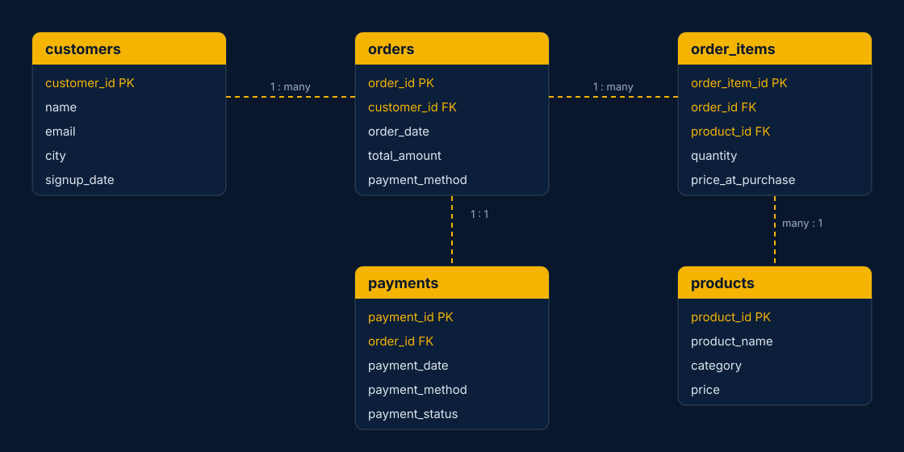

Executive summary
A SQL-only analytics project on a simulated e-commerce database, run as eleven staged scripts — schema design, loading, validation, exploration, then revenue, customer, product and payment analysis, finishing with advanced window-function SQL and written insights.
There's no dashboard here on purpose: the point is what can be shown with well-structured PostgreSQL alone. The payment-health check below is one example of the kind of question the workflow answers.
Business problem
Business question: what do revenue, customer, product and payment patterns look like once the data is properly validated and modelled — and where is value leaking?
Questions investigated
- Where is revenue concentrated across products and time?
- What's the gap in value between repeat and one-time customers?
- Which cohorts retain, and how does RFM segment the customer base?
Payments
- How often do payments fail, and is it concentrated in one method?
- How much order value is at risk from failed payments?
Dataset
| Table | Records | Notes |
|---|---|---|
| customers | 10,000 | City and signup date |
| products | 500 | Category and price |
| orders | 100,000 | Order dates run from 2022-01-01 to 2024-12-31 |
| order_items | 275,000 | Quantity and price at purchase |
| payments | 100,000 | One payment record per order; status Success, Failed or Pending |
Dataset note: this is a simulated e-commerce database built for portfolio analysis; record counts were computed directly from the repository's CSV files.
Data preparation
Script 03 validates the loaded data before any analysis runs: NULL checks on key fields across customers, orders and order_items, duplicate-key detection (repeated emails, repeated order IDs), and referential-integrity checks between tables.
Data model & SQL architecture

| Script | What it does |
|---|---|
| 01_schema.sql | CREATE TABLE statements with constraints |
| 02_data_loading.sql | Load order and COPY commands |
| 03_data_validation.sql | NULL checks, duplicates, foreign-key integrity |
| 04_eda.sql | Exploratory analysis, including percentile calculations |
| 05_revenue_analysis.sql | Revenue KPIs and trends |
| 06_customer_analysis.sql | Lifetime value, segmentation, retention |
| 07_product_analysis.sql | Best sellers, Pareto, category ranking |
| 08_order_analysis.sql | Average order value, frequency, peak periods |
| 09_payment_analysis.sql | Payment methods, failures, revenue at risk |
| 10_advanced_sql.sql | Window functions, cohorts, RFM, month-on-month growth |
| 11_business_insights.sql | Insights written up as annotated SQL |
- Joins
- CTEs
- Aggregations
- RANK / DENSE_RANK / ROW_NUMBER
- LAG / LEAD
- Running totals & moving averages
- NTILE bucketing
- CASE WHEN segmentation
- Cohort analysis
- RFM scoring
- PERCENTILE_CONT
Analytical approach
- Schema (01)
- Load data (02)
- Validate (03)
- EDA (04)
- Revenue → Payments (05–09)
- Advanced SQL (10)
- Business insights (11)
Key findings
| Payment status | Payments | Share of payments | Share of order value |
|---|---|---|---|
| Success | 85,026 | 85.03% | 85.06% |
| Failed | 9,910 | 9.91% | 9.84% |
| Pending | 5,064 | 5.06% | 5.09% |
Business recommendations
If this were a live system
- A consistently elevated failure rate on one payment method would be worth escalating to the payment gateway.
- The revenue-at-risk query below could run as a recurring check rather than a one-off report.
- Cohort retention and RFM segments could feed directly into a targeted re-engagement campaign for “At Risk” customers.
Query showcase
No dashboard here — the SQL itself is the deliverable. One example, in full:
SELECT
p.payment_method,
COUNT(p.payment_id) AS failed_transactions,
ROUND(SUM(o.total_amount), 2) AS revenue_at_risk
FROM payments p
JOIN orders o ON p.order_id = o.order_id
WHERE p.payment_status = 'Failed'
GROUP BY p.payment_method
ORDER BY revenue_at_risk DESC;Revenue & products
- Revenue concentration across products (Pareto)
- Monthly and seasonal revenue patterns
- Category pricing and order-value trends
Customers & payments
- Returning versus one-time customer value
- Cohort retention and RFM segments
- Never-ordered customers as an activation group
Technical implementation
| Tool | Used for |
|---|---|
| PostgreSQL | Database engine |
| pgAdmin | Query execution and database management |
| SQL | Everything else |
Limitations & assumptions
Worth keeping in mind
- The database is simulated; figures demonstrate SQL technique, not a real platform's transaction history.
- No causal inference was performed — cohort and RFM patterns are descriptive, not diagnosed causes.
- Payment-failure analysis is a snapshot of the loaded data, not a time-series of gateway incidents.
Explore the code
The repository is organised as eleven numbered scripts, run in order, plus a separate annotated insights file.